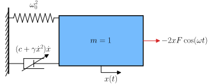
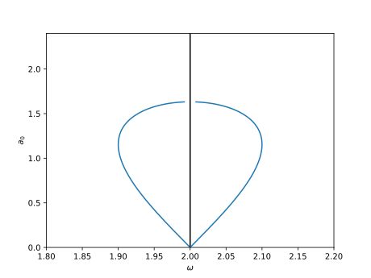
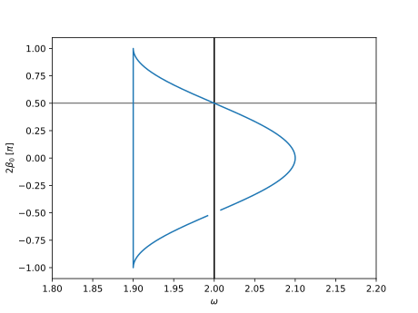
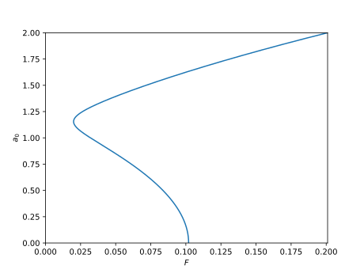
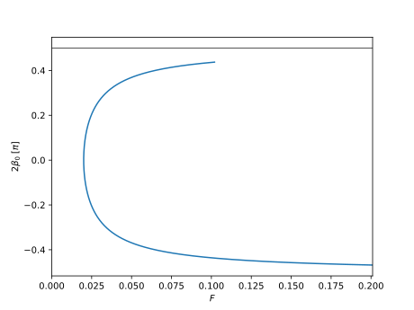

Parametrically excited Rayleigh oscillator
MMS example on a Rayleigh oscillator subject to parametric forcing. This configuration was studied by Nayfeh and Mook [2], section 5.7.2. Note that the Rayleigh oscillator is quite similar to the Van der Pol oscillator as they are both associated to damping nonlinearities.
System description
{kind=link}

Illustration of a parametrically forced Rayleigh oscillator through the time-varying stiffness \(\omega_0^2 + 2 F \cos(\omega t)\).
The system’s equation is
where
\(x\) is the oscillator’s coordinate,
\(t\) is the time,
\(\dot{(\bullet)} = \mathrm{d}(\bullet)/\mathrm{d}t\) is a time derivative,
\(c\) is the linear viscous damping coefficient,
\(\omega_0\) is the oscillator’s natural frequency,
\(\gamma\) is the nonlinear damping coefficient,
\(F\) is the forcing amplitude,
\(\omega\) is the forcing frequency.
A parametric response around twice the oscillator’s frequency is sought so the frequency is set to
where
\(\epsilon\) is a small parameter involved in the MMS,
\(\sigma\) is the detuning.
The parameters are then scaled to indicate how weak they are:
\(c = \epsilon \tilde{c}\) indicates that damping is weak,
\(F = \epsilon \tilde{F}\) indicates that forcing is weak,
\(\gamma = \epsilon \tilde{\gamma}\) indicates that nonlinear damping is weak.
Code description
The script below allows to
Construct the dynamical system.
Apply the MMS to the system,
Evaluate the MMS results at steady state,
Compute the forced response and the backbone curve,
Evaluate the stability of the computed forced solution.
1# -*- coding: utf-8 -*-
2
3#%% Imports and initialisation
4from sympy import symbols, Function
5from sympy.physics.vector.printing import init_vprinting, vlatex
6init_vprinting(use_latex=True, forecolor='White') # Initialise latex printing
7from oscilate import MMS
8
9# Parameters and variables
10omega0, F, c = symbols(r'\omega_0, F, c', real=True,positive=True)
11gamma = symbols(r'\gamma',real=True)
12t = symbols('t')
13x = Function(r'x', real=True)(t)
14
15# Dynamical system
16Eq = x.diff(t,2) + omega0**2*x + gamma*x.diff(t)**3 - c*x.diff(t)
17fF = -2*x # Parametric forcing
18dyn = MMS.Dynamical_system(t, x, Eq, omega0, fF=fF, F=F)
19
20# Initialisation of the MMS sytem
21eps = symbols(r"\epsilon", real=True, positive=True) # Small parameter epsilon
22Ne = 1 # Order of the expansions
23omega_ref = omega0 # Reference frequency
24ratio_omegaMMS = 2 # Look for a solution around 2*omega_ref
25
26param_to_scale = (gamma, F , c )
27scaling = (1 , Ne, Ne)
28param_scaled, sub_scaling = MMS.scale_parameters(param_to_scale, scaling, eps)
29
30mms = MMS.Multiple_scales_oscillator(dyn, eps, Ne, omega_ref, sub_scaling, ratio_omegaMMS=ratio_omegaMMS)
31
32# Application of the MMS
33mms.apply_MMS(orders_polar="all")
34
35# Evaluation at steady state
36ss = MMS.Steady_state(mms)
37
38# Solve the evolution equations for a given dof
39solve_dof = 0 # dof to solve for
40ss.solve_bbc(solve_dof=solve_dof, c=param_scaled[-1])
41ss.solve_forced(solve_dof=solve_dof)
42
43# Stability analysis
44ss.stability_analysis_forced(coord="polar", eigenvalues=True)
45
46# Plot the steady state results
47# -----------------------------
48
49# Set parameters' numerical values
50import numpy as np
51param = [(omega0, 1),
52 (c, 1e-1),
53 (gamma, 1e-1),
54 (ss.coord.a[0], np.linspace(1e-10, 2, 1000))]
55
56# Frequency response
57param_FRC = param + [(dyn.forcing.F, 1e-1)]
58BBC = MMS.visualisation.Backbone_curve(mms, ss, dyn, param_FRC)
59FRC = MMS.visualisation.Frequency_response_curve(mms, ss, dyn, param_FRC, bif=False)
60FRC.plot(ss=ss, bbc=BBC)
61
62# Amplitude response
63param_ARC = param + [(mms.omega, 2.02)]
64ARC = MMS.visualisation.Amplitude_response_curve(mms, ss, dyn, param_ARC)
65ARC.plot(ss=ss)
66
67# %%
Plot outputs
The plot outputs shown below are generated from the code above.
Frequency response curve
The two figures below display the amplitude and phase responses (blue) of the \(1^{\text{st}}\) harmonic of the Duffing oscillator as a function of the excitation frequency.
{kind=link}

Frequency response curve of the Rayleigh oscillator (amplitude).
{kind=link}

Frequency response curve of the Rayleigh oscillator (phase).
Amplitude response curve
The two figures below display the amplitude and phase responses (blue) of the \(1^{\text{st}}\) harmonic of the Duffing oscillator as a function of the excitation amplitude.
{kind=link}

Amplitude response curve of the Rayleigh oscillator (amplitude).
{kind=link}

Amplitude-response curve of the Rayleigh oscillator (phase).